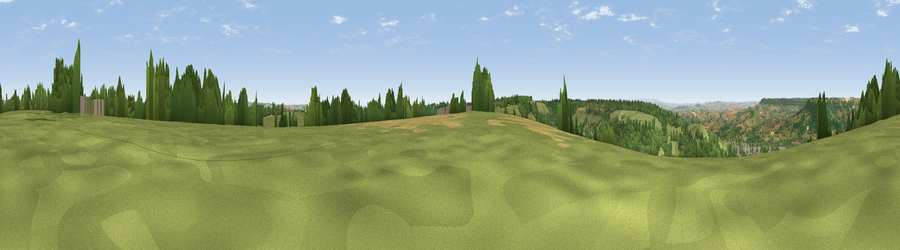

Farway Hill
#12464 in England · top 23% of its area beats it · near HonitonWhere it is
The exact computed spot (SY 17167 98799). Click the marker for map links.
The view, rendered

A 360° render of this exact spot computed from the terrain model, tree cover and land cover — summer colours, afternoon light, calibrated against photographs of famous viewpoints. Real trees, hedges and buildings will differ in detail.
The panorama
Grey silhouette: terrain skyline in each direction (720 bearings, Earth curvature and refraction included). Dashed green: skyline with trees (+15 m) and buildings (+8 m) as obstacles. Blue strip: how far the ground is visible on each bearing.
Where the view opens
Wedge length = distance to the farthest visible ground on that bearing (vegetation-aware). Rings at 10, 25 and 50 km.
What fills the view
55% grassland · 35% woodland · 6% cropland · 4% built-up ·
Angular shares of the visible panorama (visual magnitude), not map area. Landscape diversity 0.44 (0–1 Shannon).
Key numbers
More beautiful places nearby
The staircase of upgrades: each row has a higher view potential than everything closer. Driving times are estimates from straight-line distance, calibrated against real road routing — check an actual route before setting out.
| Place | Direction | Drive | Score |
|---|---|---|---|
| Viewpoint near Gittisham | W · 2 km | ~6 min | 64.8 |
| Viewpoint near Gittisham | WSW · 5 km | ~10 min | 68.2 |
| Hembury | NW · 7 km | ~15 min | 75.9 |
| Viewpoint near Tipton St John | SW · 10 km | ~19 min | 81.5 |
| Viewpoint near Sidmouth | SSW · 14 km | ~25 min | 83.0 |
| High Peak | SSW · 15 km | ~26 min | 85.3 |
| Golden Cap | ESE · 24 km | ~40 min | 88.7 |
| The Knoll | ESE · 38 km | ~57 min | 91.0 |
50.78283, -3.17634 · source: dobih hill · position refined by local search. Computed location — check access rights before visiting.